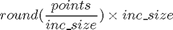

putIntoVoxels
Description: This puts whatever is passed into voxels by dividing by the global workspace.inc_size.
Contents
Function Call
Inputs:
points (3 x many cartesian matrix)
Returns:
points (3x many cartesian matrix)
function points=putIntoVoxels(points)
Variables
global workspace
The rounding function

% This function puts the points into voxels
points=(round(points./workspace.inc_size))*workspace.inc_size;